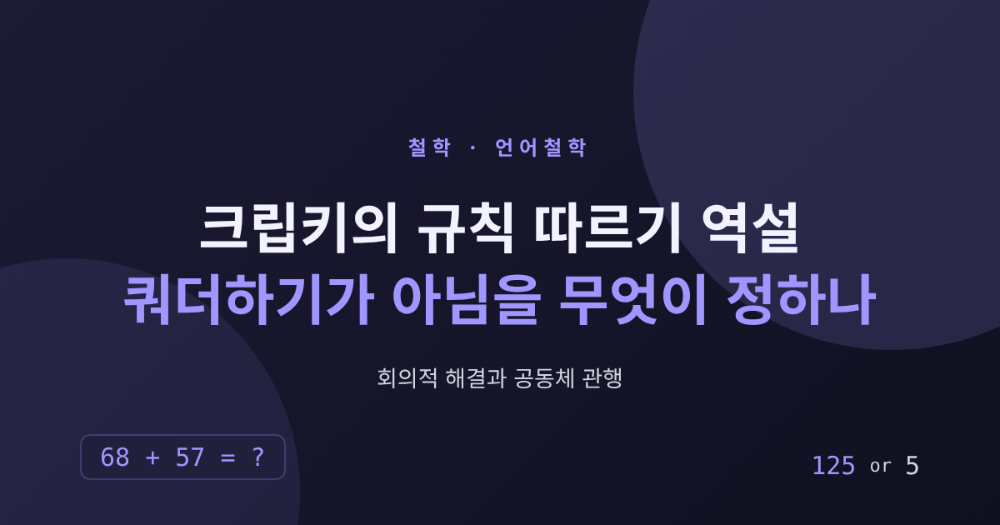
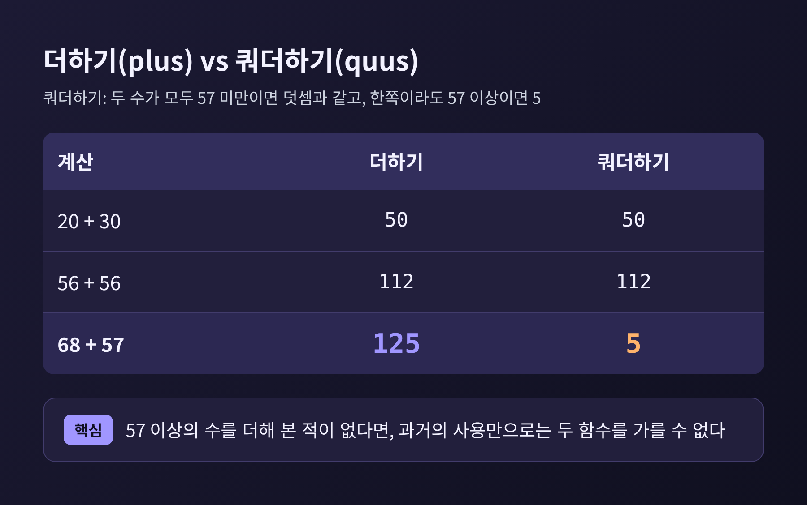
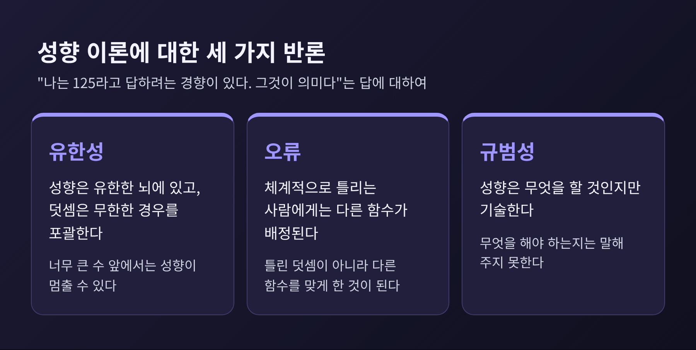
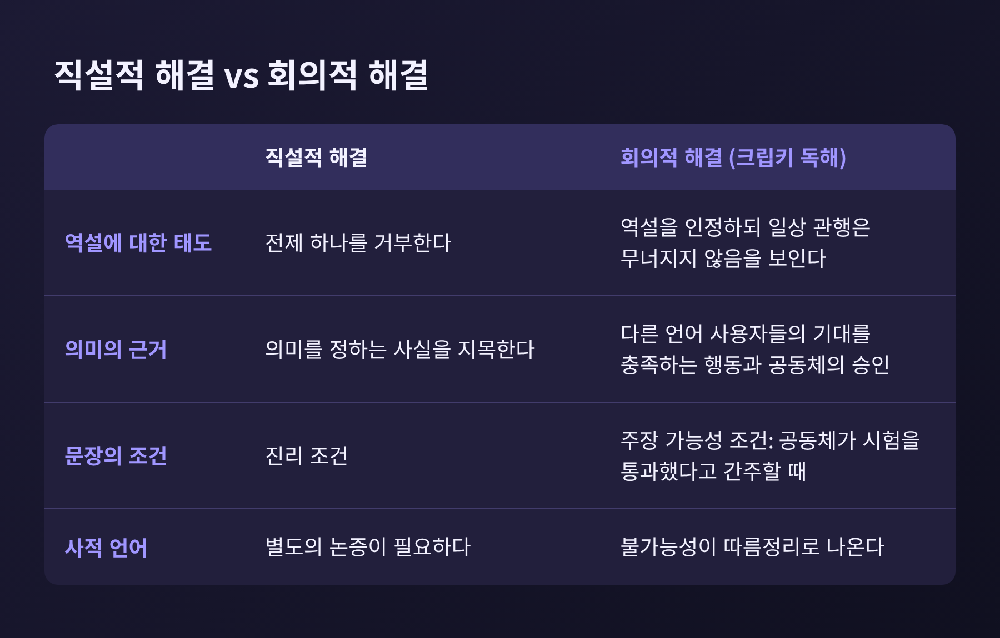

이번 글에서는 크립키의 규칙 따르기 역설을 정리해 보려 합니다.
질문은 단순합니다. 내가 지금껏 '더하기'를 해왔다는 것을, '쿼더하기'를 해온 것이 아니라고 말할 근거가 무엇이냐는 것입니다.
먼저 답부터 적자면, 크립키가 읽어낸 비트겐슈타인의 답은 "개인의 마음속에는 그런 사실이 없고, 공동체가 인정하는 관행이 그 자리를 채운다"입니다. 이 답은 지금도 다투어지고 있습니다.

크립키는 1982년 하버드대학교 출판부에서 《Wittgenstein on Rules and Private Language》(비트겐슈타인의 규칙과 사적 언어)를 냈습니다. 분량은 150쪽입니다.
책의 중심에는 계산 하나가 놓여 있습니다.
나는 57 이상의 수를 더해 본 적이 없습니다. 그런 내가 68 + 57을 계산하라는 요청을 받습니다. 나는 망설임 없이 125라고 답합니다.
그때 회의론자가 끼어듭니다. 당신이 과거에 '더하기'라는 말로 의미한 것은 사실 '쿼더하기'였다는 것입니다.
쿼더하기(quaddition)의 규칙은 이렇습니다. 두 수가 모두 57 미만이면 덧셈과 같은 값을 냅니다. 어느 한쪽이라도 57 이상이면 결과는 5입니다.
내가 지금까지 해온 모든 계산은 덧셈으로도, 쿼더하기로도 똑같이 설명됩니다. 57 이상의 수를 더해 본 적이 없으니 두 가설이 갈릴 자리가 없었던 것입니다.
그렇다면 125가 5보다 옳다고 정해 주는 것은 무엇일까요. 같은 방식으로 만들 수 있는 대안 함수는 무한히 많습니다. 새로운 계산을 할 때마다 나는 어둠 속으로 뛰어드는 꼴이 됩니다.
여기서 짚어 둘 점이 있습니다. 표적은 덧셈이라는 수학이 아닙니다. "내가 쓰는 '더하기'라는 말이 바로 그 함수를 가리킨다"는 주장입니다. 이 주장을 뒷받침하는 사실이 어디 있느냐고 묻는 것입니다.

이 논증을 기억력 문제로 읽으면 곁길로 빠집니다. "너무 오래돼서 내가 무엇을 의미했는지 잊었다"는 이야기가 아니기 때문입니다.
회의론자는 이상적인 조건을 허용합니다. 내 정신사 전체를 열어 보아도 좋고, 심지어 전지한 신이 아는 것까지 동원해도 좋다는 입장입니다. 그렇게 해도 '덧셈을 의미했다'는 사실이 어디에 있느냐는 물음입니다. 인식의 한계가 아니라 그런 사실이 존재하느냐를 따지는 형이상학의 문제라는 읽기가 표준 해석으로 꼽힙니다. 긴스보그(Ginsborg)처럼 인식론적 하위 논증이 꼭 필요하다고 보는 해석자도 있습니다.
의미를 정하는 사실이 있다면, 그것은 두 가지 조건을 채워야 합니다.
첫째는 외연 조건입니다. 그 사실은 정확한 적용을 골라내야 합니다. 덧셈과 쿼더하기를 가를 수 있어야 한다는 뜻입니다.
둘째는 규범성 조건입니다. 크립키의 핵심 주장은 의미와 미래 행동의 관계가 기술적이 아니라 규범적이라는 것입니다. 의미는 내가 앞으로 무엇을 '할 것인가'가 아니라 '해야 하는가'를 일러 주어야 합니다.
크립키는 후보를 하나씩 검토해 물리칩니다. 성향, 덧셈을 구현한 기계, 단순성, 내성으로 포착되는 질적 상태, 심상, 원초적 상태, 프레게적 뜻이 그 목록입니다. 어느 것도 두 조건을 함께 채우지 못한다는 것이 크립키의 결론입니다.
가장 먼저 떠오르는 답은 성향입니다. 나는 68 + 57을 보면 125라고 답하려는 경향이 있으니, 그 경향이 곧 덧셈을 의미한다는 사실이라는 것입니다.
상식에 가까운 답이지만 세 가지 반론에 부딪힙니다.
하나는 유한성입니다. 내 성향은 유한한 뇌에 깃들어 있습니다. 그런데 덧셈은 무한히 많은 경우를 포괄합니다. 너무 큰 수 앞에서는 성향이 어깨를 으쓱하는 데서 끝날 수도 있습니다.
다른 하나는 오류입니다. 계산을 체계적으로 틀리는 사람이 있다고 해 봅시다. 성향이 곧 의미라면, 그 사람은 틀린 덧셈이 아니라 다른 함수를 '맞게' 하고 있는 것이 됩니다.
마지막은 규범성입니다. 성향은 내가 무엇을 할 것인지를 기술할 뿐, 무엇을 해야 하는지는 말해 주지 않습니다.
성향론 쪽의 재반박도 만만치 않습니다. 블랙번(Blackburn)은 성향을 유리잔의 '깨지기 쉬움'처럼 무한적 성향으로 보면 된다고 답했습니다. 이에 보고시안(Boghossian)은 유리잔의 확장된 성향은 그 물리적 본성과 양립하지만, 한 사람의 확장된 성향은 그의 유한한 생물학적 본성과 양립하지 않는다고 맞섰습니다.
'정상 조건에서의 안정된 성향'을 내세우는 제안도 있습니다. 비판자들은 무엇이 정상 조건인지 가려내는 데 이미 의미에 관한 사실이 필요하다고 지적합니다.

크립키의 논증은 《철학적 탐구》의 규칙 따르기 대목에서 출발합니다. 원문 쪽 장면 하나를 보겠습니다.
§185에는 1000 이후의 수열을 이어 쓰라는 과제를 받은 학생이 나옵니다. 학생은 1000, 1004, 1008, 1012라고 씁니다. 교정을 받자 학생은 이렇게 답합니다. "하지만 나는 같은 방식으로 계속했습니다."
표준이 마음속에 있는지, 직관에 있는지, 공적으로 가르치고 바로잡는 데 있는지를 묻게 만드는 장면입니다.
§201은 흔히 논의의 절정으로 불립니다. 어떤 행위 과정도 규칙으로 결정될 수 없다는 것이 역설입니다. 모든 행위를 규칙에 맞는 것으로 해석해 낼 수 있기 때문입니다. 그렇다면 모든 행위를 규칙과 충돌하는 것으로도 해석해 낼 수 있습니다. 결국 부합도 충돌도 남지 않습니다.
그런데 비트겐슈타인은 곧이어 여기에 오해가 있다고 말합니다. 규칙을 파악한다는 것은 언제나 해석하는 일이 아니며, 실제 사례에서 '규칙을 따른다', '규칙을 어긴다'고 부르는 데서 드러난다는 것입니다.
크립키는 해결을 두 갈래로 나눕니다. 직설적 해결은 역설의 전제를 하나 거부합니다. 곧 의미를 정하는 사실을 지목해 내는 길입니다. 회의적 해결은 역설을 받아들입니다. 다만 그것이 우리의 일상 관행을 무너뜨리지는 않는다고 보여 줍니다. 크립키는 비트겐슈타인이 후자를 택했다고 읽습니다.
이 읽기에서 규칙을 올바르게 따른다는 말의 근거는 마음의 상태가 아닙니다. 규칙을 따르는 사람의 행동이 다른 언어 사용자들의 기대를 충족하느냐가 근거입니다.
그래서 "그는 덧셈을 의미한다"라는 문장의 쓰임도 달라집니다. 크립키는 진리 조건 대신 주장 가능성 조건을 내세웁니다. 이 문장은 어떤 사실을 기술해서가 아니라, 공동체가 그 사람이 덧셈 함수를 쓰는 공동체의 시험을 통과했다고 간주할 때 말할 수 있습니다.
의미를 마음에 새겨진 지시처럼 여기는 그림에서는 사실이 먼저고 공동체의 승인은 그 뒤에 따랐습니다. 크립키의 그림에서는 순서가 뒤집힙니다. 공동체의 승인과 관행이 먼저고, '의미한다'는 말은 그 위에서 쓰입니다.
이 해결은 사적 언어 논증과도 이어집니다. 크립키는 사적 언어의 불가능성이 이 회의적 해결의 따름정리로 나온다고 씁니다. 11월 7일 글에서 다룬 사적 언어 논증이, 이 책에서는 규칙 따르기 논의에 뒤따르는 귀결로 자리를 옮깁니다.

여기까지 읽으셨다면 의문이 들 법합니다. 개인의 마음에서 사실을 못 찾았다고 공동체로 옮겨 가면 문제가 풀리는 걸까요.
이 책을 둘러싼 논쟁은 바로 이 지점에서 가장 뜨겁습니다.
먼저 비트겐슈타인의 것이냐는 물음이 있습니다. 크립키 자신도 이 책이 그 논증이 자신에게 와닿은 방식의 설명이지 비트겐슈타인의 정확한 요약이 아니라고 밝히며, 비트겐슈타인이 이 읽기를 승인할지 의심합니다. 이 인물에게 '크립켄슈타인'이라는 별칭이 붙은 이유입니다. 베이커와 해커, 맥긴, 카벨은 이 해석에 이의를 제기했습니다. 대부분의 해석자는 역설의 제시는 받아들이되, 회의적 해결이 비트겐슈타인의 것이라는 데는 동의하지 않습니다.
다음으로 공동체 호소 자체의 약점이 있습니다.
- 퇴행 문제입니다. 공동체의 합의에 기대는 정합론도 그 합의를 어떻게 쓸지에 대한 선행 고정을 요구한다는 반론이 있습니다.
- 관행도 같은 처지라는 지적입니다. 맥컬러(McCullagh)는 §201의 역설이 규칙뿐 아니라 관행에도 똑같이 적용되므로, 어느 쪽도 더 근본적인 설명이 될 수 없다고 논증합니다. §202의 "규칙을 따른다는 것도 하나의 관행"이라는 말을 설명의 바닥으로 삼을 수 없다는 뜻입니다.
- 행위자성의 문제입니다. 후엔(Huen)은 크립키의 독해가 규칙을 따르는 사람의 행위자성을 주변화한다고 비판합니다. §241이 말하는 합의는 의견의 합의가 아니라 삶의 형식에서의 합의이며, 따르는 사람은 기준을 비판적으로 갱신하는 데도 참여한다는 것입니다.
그리고 역설 자체를 해소하려는 직설적 해결이 있습니다.
- 맥도웰(McDowell)은 이해를 해석과 동일시하는 가정을 버리면 역설이 풀린다고 봅니다. 규칙 따르기는 관행 속으로 길들여지는 데서 나옵니다.
- 스트라우드(Stroud)는 역설이 언어를 전제하지 않는 사실이라는 충족될 수 없는 요구의 표현이라고 진단합니다.
- 라이트(Wright)는 구성적 질문에 너무 일찍 절망하지 말자며 판단 의존적 설명을 제안합니다.
- 보고시안은 크립키가 의미 속성의 기이함을 보이는 논증을 내놓지 못했다고 비판합니다.
- 긴스보그는 의미를 표현을 적용하려는 성향과 그 적용을 적절하다고 여기는 성향으로 설명하는 원초적 규범성을 내놓았습니다.
논쟁은 끝나지 않았습니다. 2024년에도 알렉산더 밀러가 《비트겐슈타인과 의미의 가능성: "규칙을 맹목적으로 따른다는 것"》이라는 책에서 이 회의 논증에 대한 비환원주의적 응답을 펼쳤습니다.
마지막으로 한 가지만 덧붙이겠습니다.
이 글에서 제가 확인한 것은 크립키가 던진 물음이 아직 닫히지 않았다는 점입니다. 회의적 해결이 옳다고 단정할 근거도, 틀렸다고 접을 근거도 이 글의 자료만으로는 충분하지 않습니다. 저는 판정보다 물음의 모양을 정확히 보여드리는 데 무게를 두었습니다.
그래도 남는 것은 있습니다.
나는 125라고 답할 때, 마음속 어딘가에 새겨진 '덧셈'을 읽어 내고 있다고 믿었습니다. 크립키의 질문은 그 믿음의 근거를 묻습니다. 근거가 마음 안에 없다면, 다른 사람들과 함께 쓰는 관행에서 찾아야 하는지, 아니면 애초에 질문이 잘못 세워졌는지를 가려야 합니다.
결국 남는 것은 하나입니다. "더하기를 해왔다"는 말은 과거에 관한 보고이기에 앞서, 지금 우리가 주고받는 관행의 일부라는 점입니다.
내일 누군가 68 + 57의 답을 5라고 한다면, 저는 그가 틀렸다고 말할 것입니다. 그 말을 무엇이 떠받치는지 한 번쯤 따져 보신다면, 이 글이 그 계기가 되었으면 합니다.